NaN 대체값을 보존하며 clamp를 정규화하기
여러 비교와 select로 표현한 clamp를 minnum·maxnum과 명시적인 NaN 선택으로 나눈다.
llvm_issue_27_presentation.pdf의 전체 내용입니다. 설명·코드·표·검증 기록을 생략하지 않고 옮겼습니다. 그림 안의 문자 인식 결과에는 기호 오류가 있을 수 있어 이미지도 함께 제공합니다.
- MD로컬 패치 보고서CLAMP_PATCH_REPORT.md
- PDF제안·검증 발표자료 · 16쪽llvm_issue_213189_ppt.pdf
- DOCX상세 분석 보고서llvm_issue_27_analysis.docx
- DOCX그림을 추가한 수정 보고서llvm_issue_27_analysis_edited.docx
- PDF실전 사례·후속 구현 발표자료 · 18쪽llvm_issue_27_presentation.pdf
각 자료는 별도의 버전입니다. 같은 주제라도 구현 상태·설명 범위·수치가 다를 수 있습니다.
이 문서의 목차
L LV M O P E N I S S U E — 의 미 부 터 검 증 까 지 / nsz NaN-fallback [0,1] Float Clamp / 을 llvm.minnum / llvm.maxnum
LLVM OPEN ISSUE — 의미부터 검증까지
nsz NaN-fallback [0,1] Float Clamp
을 llvm.minnum / llvm.maxnum 으로 정규화하는 InstCombine 제안
김준영 | LLVM 멘토십 프로그램
의미 이해 → 실전 사례 → IR 대응 → Alive2 형식 검증 → llvm/llvm-project Issue #213189 제출 ·assign 완료
페이지 배치·기호·도식 확인하기

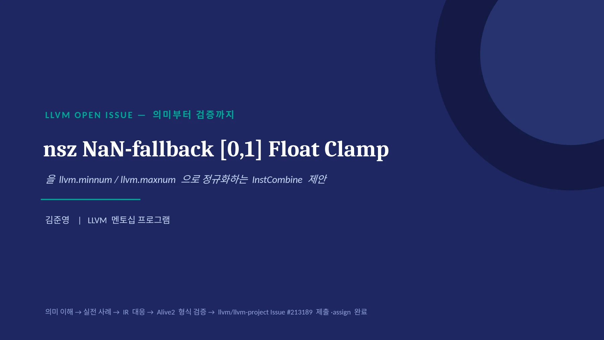
00 · 시 작 전 에 / 오늘 계속 나올 용어 5 개 — 미리 정리 / LLVM 을 몰라도 이 다섯 개만 알면 발표 전체를 따라올 수 있다
00 · 시작 전에
오늘 계속 나올 용어 5개 — 미리 정리
LLVM을 몰라도 이 다섯 개만 알면 발표 전체를 따라올 수 있다
nsz
"부호 있는 0(+0.0/-0.0) 차이는 신경 안 써도 된다"는 컴파일러 허락. -ffast- math를 켜면 자동으로 붙음
Alive2
두 코드가 모든 입력에 대해 정말 같은 의미인지, 수학적으로 자동 증명해주는 검증 도구
poison
"이 값은 위험할 수 있다"는 표시. 당장은 괜찮지만 특정 방식으로 쓰이면 문제가 될 수 있음
denormal / FTZ
denormal = 0에 극도로 가까운 특수한 값. FTZ = 그런 값을 계산 중 그냥 0으로 바꿔버리는 하드웨어 모드
InstCombine
LLVM 컴파일러 안에서, 코드를 더 짧고 표준적인 형태로 정리해주는 최적화 단계
02
페이지 배치·기호·도식 확인하기

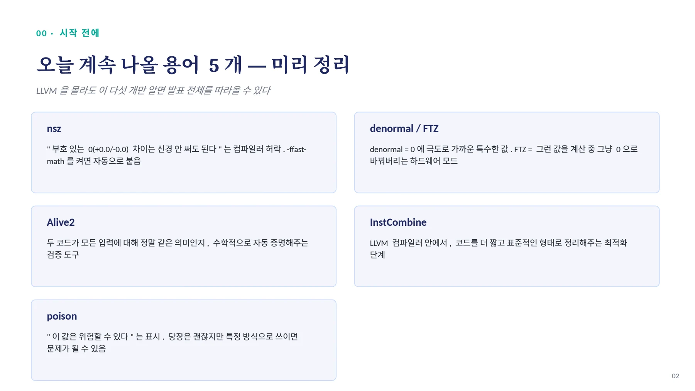
01 · 개 요 / 지금까지와 다른 성격의 이슈 / • 기존 분석들은 이미 병합된 PR 을 사후적으로 역추적하는 작업
01 · 개요
지금까지와 다른 성격의 이슈
•
기존 분석들은 이미 병합된 PR을 사후적으로 역추적하는 작업
•
이번엔 병합된 패치가 없는 상태에서 시작 — 이해→검증→제출까지 전 과정을 직접 수행
•
'답을 설명'하는 게 아니라 '판단 근거를 스스로 마련'해야 하는 문제
현재 상태 : llvm/llvm-project Issue #213189 로 실제 제출 ·assign 완료
// 오늘의 진행 흐름
의미부터 이해 → 실전 코드 사례(darktable) → IR 대응 → 정확성 조건
→ 선례 조사 → denormal/FTZ 발견 → Alive2 형식 검증 → 로컬 구현 리뷰 → 결론03
페이지 배치·기호·도식 확인하기

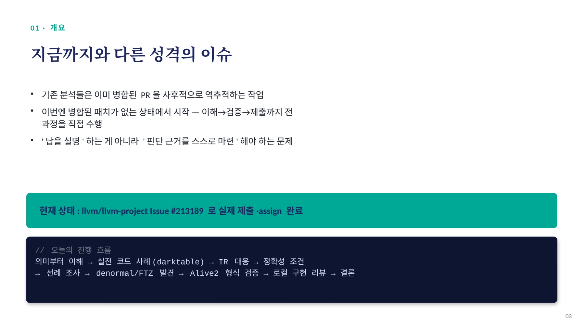
02 · 의 미 부 터 이 해 하 기 / IR 을 보기 전에 , 값의 의미부터 / 특수 경로 — x 가 NaN 일반 경로 — x 가 숫자
02 · 의미부터 이해하기
IR을 보기 전에, 값의 의미부터
특수 경로 — x가 NaN
•
NaN은 숫자 비교로 정상 처리하기 어려움
•
그래서 fallback 을 반환
•
fallback은 '실패 시 처리'가 아니라, NaN일 때 돌려주기로 미리 정한 데이터 값
일반 경로 — x가 숫자
•
숫자 x를 [0.0, 1.0] 범위 안으로 제한
•
x < 0 → 0.0
•
0 ≤ x ≤ 1 → x 그대로
•
x > 1 → 1.0
전체 의미 : result = isnan(x) ? fallback : clamp(x, 0.0, 1.0)04
페이지 배치·기호·도식 확인하기

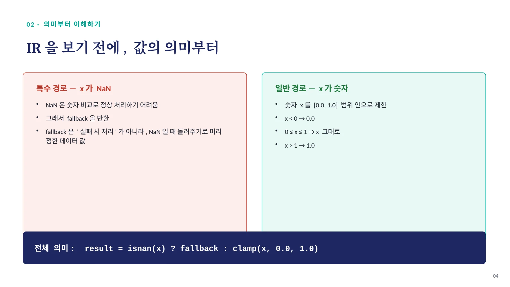
02 · 의 미 부 터 이 해 하 기 — 배 경 / darktable 은 뭐고 , dithering 은 왜 필요한가 / darktable 이란 dithering 이란
02 · 의미부터 이해하기 — 배경
darktable 은 뭐고 , dithering 은 왜 필요한가
darktable 이란
•
오픈소스 RAW 사진 편집/현상 프로그램
•
Adobe Lightroom 과 비슷한 위치의 무료 대안
•
실제로 널리 쓰이는 프로그램이라, 그 최적화된 코드가 '실전 증거' 로서 설득력이 있음
dithering 이란
•
색상을 더 적은 단계로 줄여 저장/출력할 때, 매끄러운 그라데이션이 계단처럼 끊겨 보이는 '밴딩' 현상이 생김
•
픽셀마다 자잘한 오차를 살짝 섞어 넣어, 눈에는 끊김이 안 보이게 눈속임하는 기법
Floyd-Steinberg 알고리즘
•
1976 년에 나온 대표적인 오차 확산 (error diffusion) dithering 알고리즘 — darktable 의 기본 경로 중 하나
•
한 픽셀을 처리할 때 생기는 반올림 오차를, 정해진 비율(7/16, 3/16, 5/16, 1/16)로 오른쪽·아래 이웃 픽셀에 나눠줌
•
→ 이 '이웃에게 오차를 나눠주기 전에', 이웃 픽셀 값이 NaN 없이 [0,1] 범위 안의 안전한 값이어야 함 — 그래서 clamp+NaN-fallback이 필요
05
페이지 배치·기호·도식 확인하기

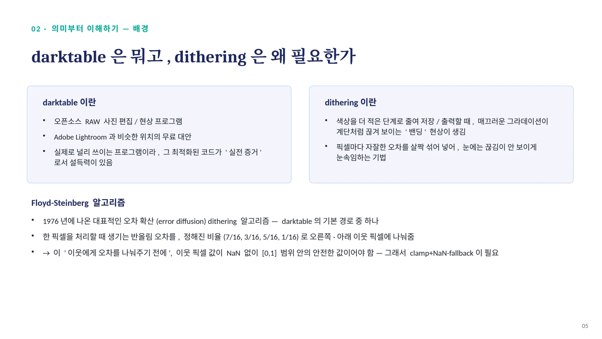
02 · 의 미 부 터 이 해 하 기 — 실 전 사 례 / darktable dither 모듈의 _clipnan() / 추상적 예제가 아니라, 실제 픽셀 버퍼를 준비하는 이미지 처리 코드
02 · 의미부터 이해하기 — 실전 사례
darktable dither 모듈의 _clipnan()
추상적 예제가 아니라, 실제 픽셀 버퍼를 준비하는 이미지 처리 코드
입력 | 반환값 | 의미 |
|---|---|---|
x < 0 | 0.0 | 하한 clamp |
0 ≤ x < 1 | x | 그대로 유지 |
x ≥ 1 | 1.0 | 상한 clamp |
NaN | 0.5 | 이 코드의 fallback |
// darktable/src/iop/dither.c
static inline float _clipnan(const float x)
{
// NaN -> 0.5, otherwise clamp to [0,1]
return (x >= 0.0f)
? ((x < 1.0f) ? x : 1.0f)
: dt_isnan(x) ? 0.5f : 0.0f;
}이미지 처리 모듈 : iop(image operation), dither = 제한된 출력 단계로 양자화할 때 밴딩을 줄이는 처리 (Floyd-Steinberg 가 기본 경로 중 하나 )
중요: 이 실전 코드에서 fallback은 추상적인 값이 아니라 0.5f로 고정되어 있다 — 우리가 이슈에서 %fallback을 매개변수로 열어둔 것과 대조적으로, 실제 사용처는 구체적 상수를 씀
06
페이지 배치·기호·도식 확인하기

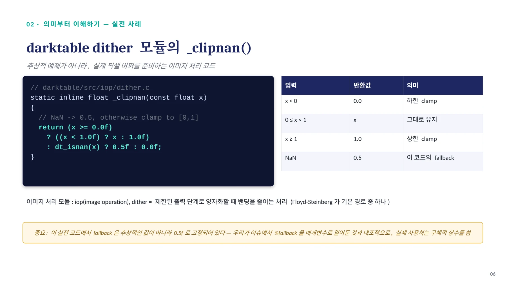
02 · 의 미 부 터 이 해 하 기 — 실 전 사 례 / 왜 hot path 인가 — 오차 확산 준비 단계 / process() → dither_type 판단 → _process_floyd_ste
02 · 의미부터 이해하기 — 실전 사례
왜 hot path인가 — 오차 확산 준비 단계
process() → dither_type 판단 → _process_floyd_steinberg()
→ 행 / 픽셀 반복 루프 → PROCESS_PIXEL_* → _clipnan_pixel(out, in)
→ for_each_channel(c): _clipnan(in[c]) // 4개 float 채널마다 적용왜 실제 hot path 인가
•
① 이미지의 행과 열을 순회
•
② 매크로가 반복 호출
•
③ 각 픽셀의 채널(4개)을 순회
•
→ _clipnan의 select 체인이 최적화 IR에서 여러 번 나타남
오차 확산 (error diffusion) 준비 역할
•
1. _clipnan_pixel(neighbor) — 이웃 픽셀을 NaN→0.5, 숫자→ [0,1] clamp
•
2. _nearest_color(current) — 현재 픽셀 양자화 , err = old - new
•
3. _diffuse_error(neighbor) — err× 가중치 (7/16,3/16,5/16,1/16) 를 이웃에
더함
•
→ 오차를 더하기 전, 이웃이 유효한 [0,1] 시작값을 갖도록 보장
07
페이지 배치·기호·도식 확인하기

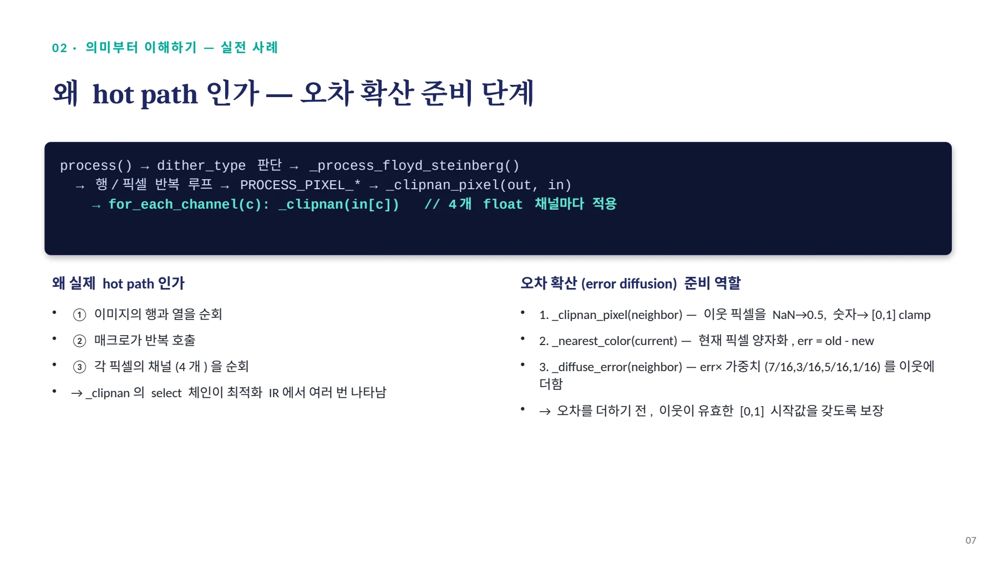
03 · 개 념 에 서 IR 로 / clamp = max(min(x,1), 0) · predicate 번역표 / clamp 단계별 예시 fcmp predicate 번역표
03 · 개념에서 IR 로
clamp = max(min(x,1), 0) · predicate 번역표
clamp 단계별 예시
입력 x | minnum(x,1) | maxnum(·,0) | clamp 결과 |
|---|---|---|---|
-0.3 | -0.3 | 0.0 | 0.0 |
0.4 | 0.4 | 0.4 | 0.4 |
1.7 | 1.0 | 1.0 | 1.0 |
minnum은 상한(천장), maxnum은 하한(바닥)을 표현 — 순서대로 적용
fcmp predicate 번역표
predicate | 초심자 번역 | 이 변환에서 역할 |
|---|---|---|
ult x,0 | NaN 이거나 x<0 | unordered less-than |
olt x,1 | 숫자이고 x<1 | ordered less-than |
ord x,0 | x가 숫자(NaN 아님) | 0은 NaN 아니므로 |
uno x,x uno(x,x)는 isnan(x) | x가 NaN 처럼 읽을 수 있다 — 자기 자신과 비교 | 한쪽이 NaN⇒isnan(x) 해도 '다르다'고 나오는 건 |
NaN뿐
src 의사코드 번역
if (isnan(x)) return fallback; else if (x<0.0) return 0.0; else if (x<1.0) return x; else return 1.0;08
페이지 배치·기호·도식 확인하기

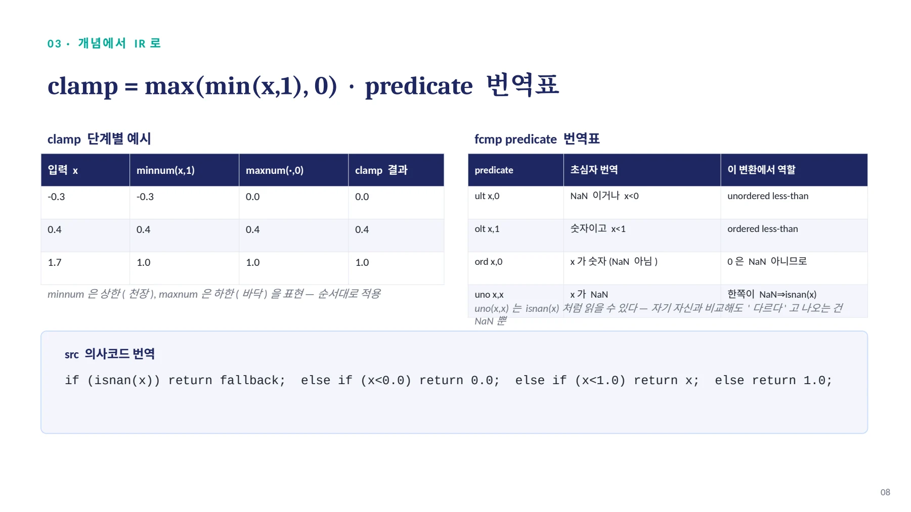
03 · 개 념 에 서 IR 로 / src → tgt: 역할이 분리된다 / 현재 (fcmp/select 6 개 ) 제안 — ① NaN 검사 ② clamp 계산 ③ 최종선택
03 · 개념에서 IR 로
src → tgt: 역할이 분리된다
현재 (fcmp/select 6 개 )
%blo = fcmp ult float %x, 0.0
%bhi = fcmp olt float %x, 1.0
%upper = select i1 %bhi,
float %x, float 1.0
%ord = fcmp ord float %x, 0.0
%lof = select i1 %ord,
float 0.0, float %fallback
%result = select i1 %blo,
float %lof, float %upper제안 — ① NaN검사 ② clamp계산 ③ 최종선택
; ① NaN 검사
%isnan = fcmp uno float %x, %x
; ② 숫자 clamp 계산
%upper = minnum(%x, 1.0)
%clamped = maxnum(%upper, 0.0)
; ③ 최종 선택
%result = select i1 %isnan,
float %fallback, float %clamped오해 방지: minnum/maxnum은 NaN-fallback 자체를 구현하지 않는다. NaN 처리는 fcmp uno + select, 숫자 clamp는 minnum/maxnum으로 역할이 나뉜다.
직관 확인: NaN 입력 시 minnum/maxnum 결과가 우연히 1.0 등이 되더라도, 최종 select가 isnan=true를 보고 그 값을 버리고 fallback을 선택한다
09
페이지 배치·기호·도식 확인하기

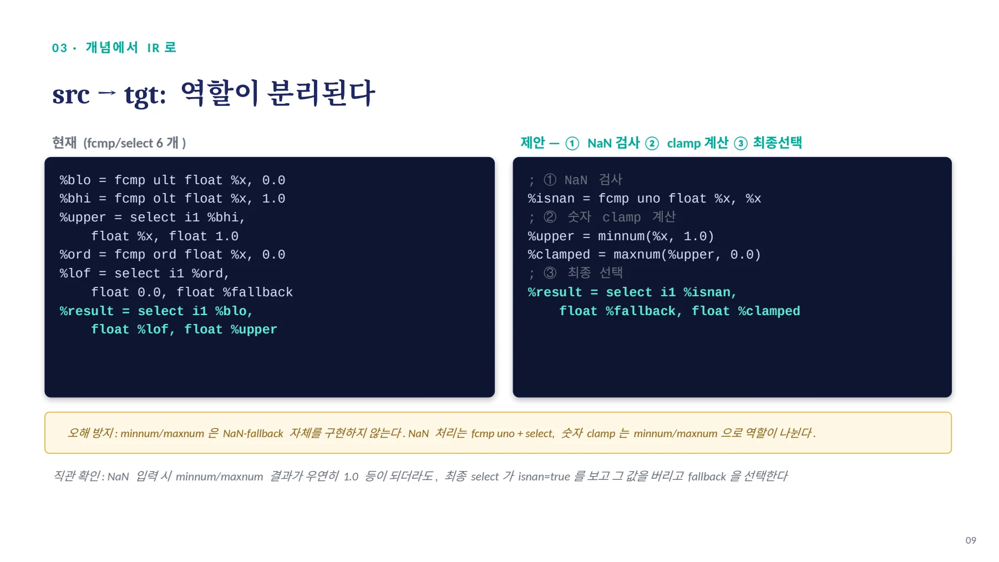
03 · 개 념 에 서 IR 로 — 정 확 성 근 거 / Why the relation holds — 4 가지 경우로 확인 / 입력 x src 결과 tgt 결과 이유
03 · 개념에서 IR 로 — 정확성 근거
Why the relation holds — 4 가지 경우로 확인
입력 x | src 결과 | tgt 결과 | 이유 |
|---|---|---|---|
NaN | fallback | fallback | ult unordered→true, ord false→fallback / isnan=true→fallback |
x < 0 | 0.0 | 0.0 | belowLoOrNan=true→lof=0.0 / minnum 후 maxnum 으로 하한 적용 |
0 ≤ x < 1 | x | x | upper 가 x 선택 / minnum·maxnum 모두 x 유지 |
x ≥ 1 | 1.0 | 1.0 | upper 가 1.0 선택 / minnum 으로 상한 1.0 적용 |
핵심
정확히 isnan(x) ? fallback : clamp(x,LO,HI) — 두 형태의 유일한 차이는 부호 있는 0(+0.0/-0.0) 뿐이며 , 이는 모든 값 - 생성 select/call 에 걸린 nsz 가 허락하는 범위다 . Alive2 증명 (nsz-only 최소 형태 ): alive2.llvm.org/ce/z/NL6Xsh
10
페이지 배치·기호·도식 확인하기

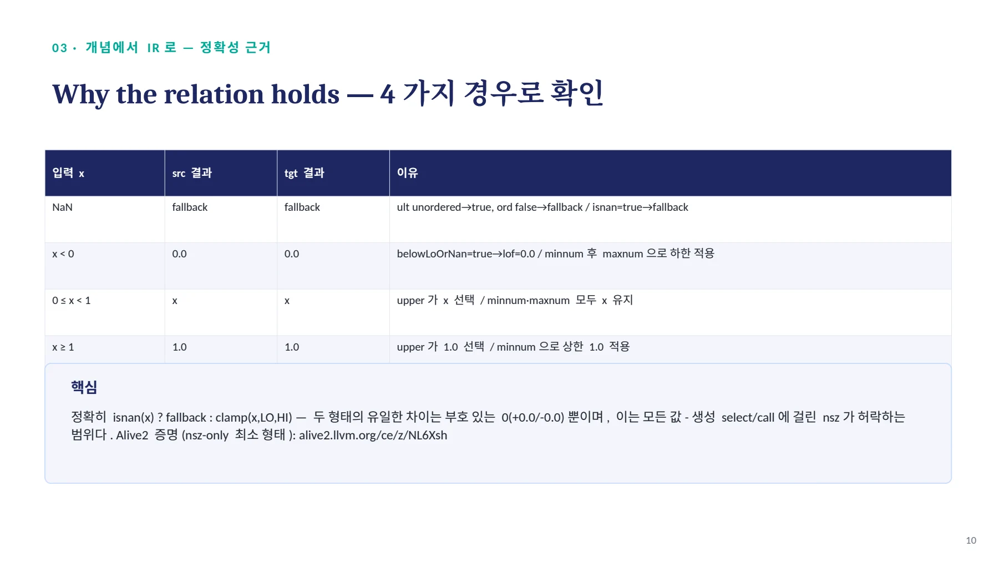
04 · 제 시 된 증 거 — 실 제 이 슈 #2 1 31 8 9 본 문 / 형식 증명 + 실측 비용표 + 실전 코퍼스 / 실전 코퍼스 증거 백엔드 비용 실측 (llvm-mca, scalar)
04 · 제시된 증거 — 실제 이슈 #213189 본문
형식 증명 + 실측 비용표 + 실전 코퍼스
실전 코퍼스 증거
•
darktable 최적화 IR(introspection_dither.ll) 에서 정확히 일치하는 패턴 8 건
•
슬라이드 4~5의 _clipnan_pixel이 실제로 이 패턴을 만들어내는 소스
•
이미지 처리 영역, 전부 -ffast-math 플래그 세트 보유
Alive2 증명 ( 영구 링크 )
alive2.llvm.org/ce/z/NL6Xsh
nsz-only 최소 형태로 통과 확인됨백엔드 비용 실측 (llvm-mca, scalar)
x86-64-v4
명령어 800→700 ↓
사이클 1004→1404 ↑
AArch64 Neoverse V1
명령어 800→700 ↓
사이클 603→605 ↑
RV64 P670 (RVV)
명령어 1400→900 ↓
사이클 358→606 ↑
명령어 수는 모든 타깃에서 감소, 사이클은 혼조 — x86·RISC-V는 증가, AArch64는 거의 그대로
11
페이지 배치·기호·도식 확인하기

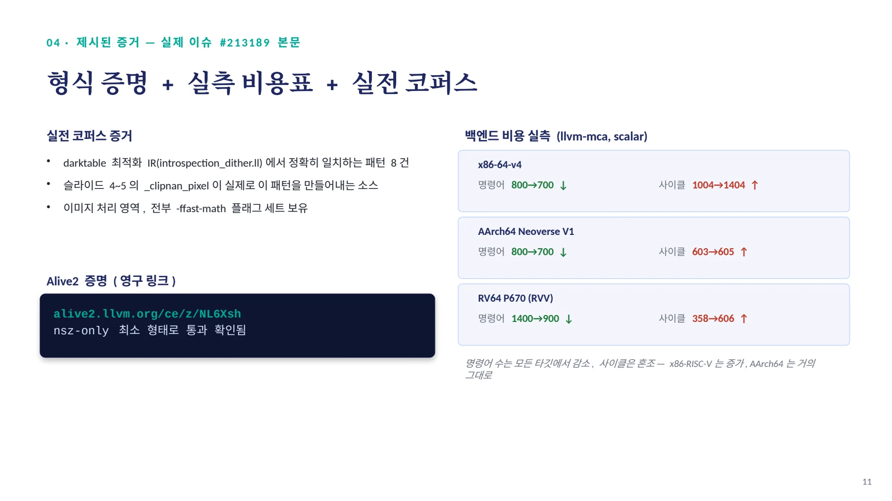
05 · 선 례 조 사 / 이미 존재하는 ' 절반짜리 ' 정규화 (canonicalization) / 정규화 = 여러 형태로 짤 수 있는 같은 로직을, 컴파일러가 알아보기 쉬운 표준 형태 하나로 통
05 · 선례 조사
이미 존재하는 ' 절반짜리 ' 정규화 (canonicalization)
정규화 = 여러 형태로 짤 수 있는 같은 로직을, 컴파일러가 알아보기 쉬운 표준 형태 하나로 통일하는 것
// InstCombineSelect.cpp — main 브랜치에서 직접 확인한 실제 코드
if (FCmp && FCmp->hasNoNaNs() && (SIFPOp->hasNoSignedZeros() || ...)) {
if (match(&SI, m_OrdOrUnordFMax(m_Value(X), m_Value(Y)))) {
Value *BinIntr = Builder.CreateBinaryIntrinsic(Intrinsic::maxnum, X, Y, &SI);
BinIntrInst->setHasNoSignedZeros(true); BinIntrInst->setHasNoNaNs(true);•
nnan 은 select 가 아니라 fcmp 에서 확인 , nsz 는 더 느슨 (one-use 면 생략 가 능 )
•
ordered뿐 아니라 unordered(ult)까지 매칭 — 우리 하한 비교와 겹치는 부분
•
그래도 nnan은 여전히 필수 — 우리 이슈는 이 요구를 없애고 isnan으로 명시 처리하는 확장
계보 : #157486 → PR #159652 → #213189
#157486 NaN 없는 순수 clamp (ffmpeg 실전 코드 , 아직 open)
PR #159652 이를 고치려는 시도 , denormal 논의로 정체
#213189 NaN-fallback 까지 얹은 상위 일반화 ( 우리 것 )
12
페이지 배치·기호·도식 확인하기

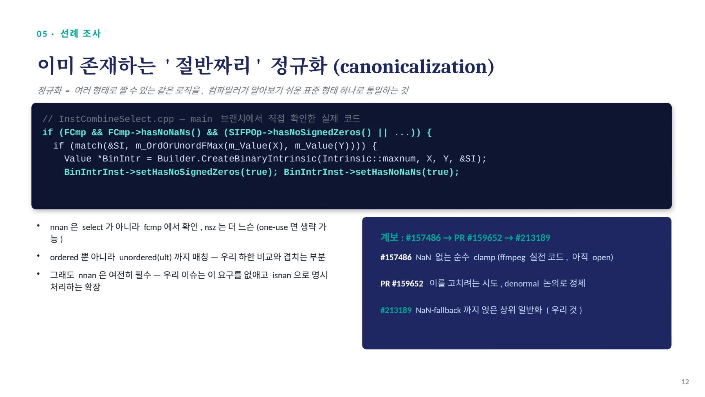
06 · 핵 심 발 견 / Denormal / FTZ — 이론이 아니라 실전 위험 / ( 용어 복습: denormal = 0 에 극도로 가까운 특수값 / FTZ = 그 값을 계산 중 0 으로 바꿔버
06 · 핵심 발견
Denormal / FTZ — 이론이 아니라 실전 위험
(용어 복습: denormal = 0에 극도로 가까운 특수값 / FTZ = 그 값을 계산 중 0으로 바꿔버리는 하드웨어 모드)
"...If %arg0 is a denormal, the transformed result will be flushed
but it wouldn't in the original." — PR #159652 저자 스스로 제기한 우려구체적 해법
DenormalMode Mode =
F->getDenormalMode(FPSem);
if (Mode != DenormalMode::getIEEE())
return nullptr;실전 위험인 이유 — crtfastmath.o
이 이슈의 전제조건: nsz
→ nsz 는 -ffast-math 를 켰을 때 나옴
→ -ffast-math 는 crtfastmath.o 를 자동 링크
→ x86 MXCSR의 FTZ 비트가 실제로 켜짐
결론
이 최적화가 적용될 가능성이 가장 높은 상황(-ffast-math)에서, denormal 값이 뜻하지 않게 0으로 뭉개질 위험도 함께 가장 커진다. 이슈 본문의 Suggested scope 에 denormal-fp-math=ieee 가드로 명시함 .
13
페이지 배치·기호·도식 확인하기

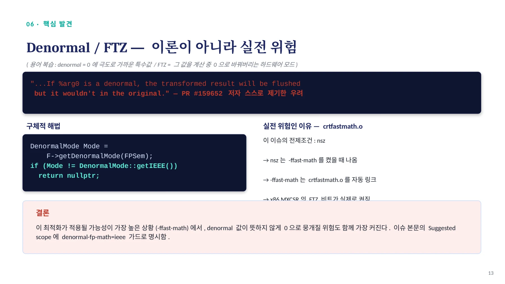
07 · 실 측 · 형 식 검 증 / fcmp 의 nsz 는 무관 — 실측과 Alive2 로 이중 확인 / 실측 (opt -O3, 두 LLVM 버전 ) Alive2 검증 여정
07 · 실측 · 형식 검증
fcmp의 nsz는 무관 — 실측과 Alive2로 이중 확인
실측 (opt -O3, 두 LLVM 버전 )
실험 | 결과 (20.1.2 / 22.1.8) |
|---|---|
fcmp 만 nsz 제거 | 결과 동일 / 결과 동일 |
이슈 원본 IR | 폴딩 안됨 / 폴딩 안됨 |
#157486 원조 패턴 | 폴딩 안됨 (PR #159652 미병합 ) |
Alive2 검증 여정
시도 | 결과 |
|---|---|
tgt 에 nsz 없음 | 실패 (target 이 더 undefined) |
src select 에 nsz 없음 | 실패 (본 분석 전사 오류) |
select 까지 nsz 전파 | 통과 — 핵심 로직 형식 증명 |
이슈 원문 그대로(5개 플래그) | 판단 불가 (Alive2 근사 한계) |
정확한 결론
이슈의 실제 목표 IR(5개 플래그 전부)은 한 번도 반증되지 않았다. 초기 실패는 본 분석의 전사 오류였고, '판단 불가'는 Alive2의 도구 한계다. 별도로 fcmp만 nsz를 뺀 쌍 (@src/@tgt)을 Alive2에 직접 통과시켜, 구현 의존적 관찰이 아니라 값의 의미 자체가 fcmp의 nsz와 무관함을 형식적으로 확정했다.
14
페이지 배치·기호·도식 확인하기

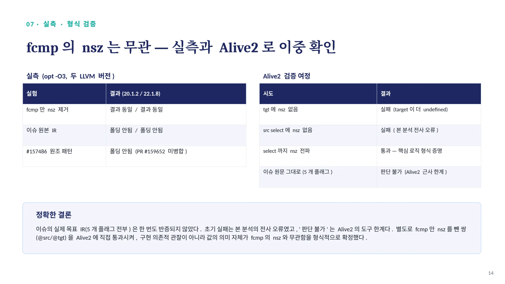
08 · 추 가 검 증 · 근 본 적 차 이 / Poison 안전 확인 · ' 우연한 ' NaN 처리 vs ' 명시적 ' / Poison/Undef
08 · 추가 검증 · 근본적 차이
Poison 안전 확인 · '우연한' NaN 처리 vs '명시적'
Poison/Undef
"min/max intrinsic은 select와 poison
시맨틱이 동일. 다른 건 undef." (llvm-dev)
→ Alive2 검증에도 poison=fallback 입력이
이미 실제로 테스트 | 됨 (7.1 결과 ) #157486 ( 원조 ) | #213189 ( 우리 것 ) |
|---|---|---|
NaN 조건 | 조건 없음 | isnan으로 직접 감지 |
NaN이 들어오면? | ogt 부작용으로 우연히 0.0 도달 | 명시적으로 별도 fallback 반환 |
결과 구분 가능? | 불가 — 진짜 0인지 NaN인지 모름 | 가능 — fallback 과 clamp 결과 분리 |
15
페이지 배치·기호·도식 확인하기

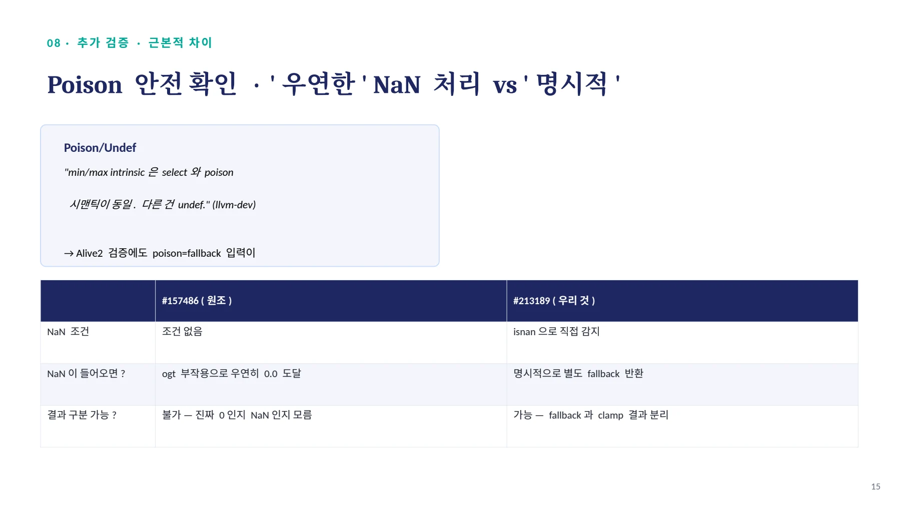
09 · 구 현 상 태 · 실 제 브 랜 치 에 서 직 접 확 인 (2 02 6 -08 기 준 ) / InstCombine 패치 — 이제 정식 2- 커밋 구조로 정리됨 / github.com/jun
09 · 구현 상태 · 실제 브랜치에서 직접 확인 (2026-08 기준 )
InstCombine 패치 — 이제 정식 2-커밋 구조로 정리됨
github.com/junyeong0619/llvm-project · branch: instcombine-clamp-nan-fallback
6e66f501 [InstCombine] Add baseline tests for nsz NaN-fallback float clamp
19d4baf1 [InstCombine] Canonicalize nsz NaN-fallback float clamp to minnum/maxnum
Fixes #213189이전에 지적했던 구멍 — 이제 해결됨
•
hasOneUse() 가드 — 이제 Cmp1/Cmp2/Cmp3/UpperSel/LowSel 전부에 추가됨
•
Denormal/FTZ — getDenormalMode(FPSem) != IEEE 가드 실제 구현 확인
•
N7(denormal 오탐 ), N8(multi-use 오탐 ) 테스트 추가 + pos_vector(<8 x float>) 까지 커버
여전히 남은 것 (의도된 설계)
•
매칭은 여전히 좁음 — 코드 주석에 "deliberately narrow" 라고 명시 , commutative 변형은 의도적으로 범위 밖
•
nnan/ninf는 절대 추론하지 않음 — NaN은 항상 명시적으로만 처리
아직 llvm/llvm-project로 PR은 제출되지 않은 상태 — 브랜치·커밋까지 완료, 다음 단계가 실제 PR 오픈
16
페이지 배치·기호·도식 확인하기

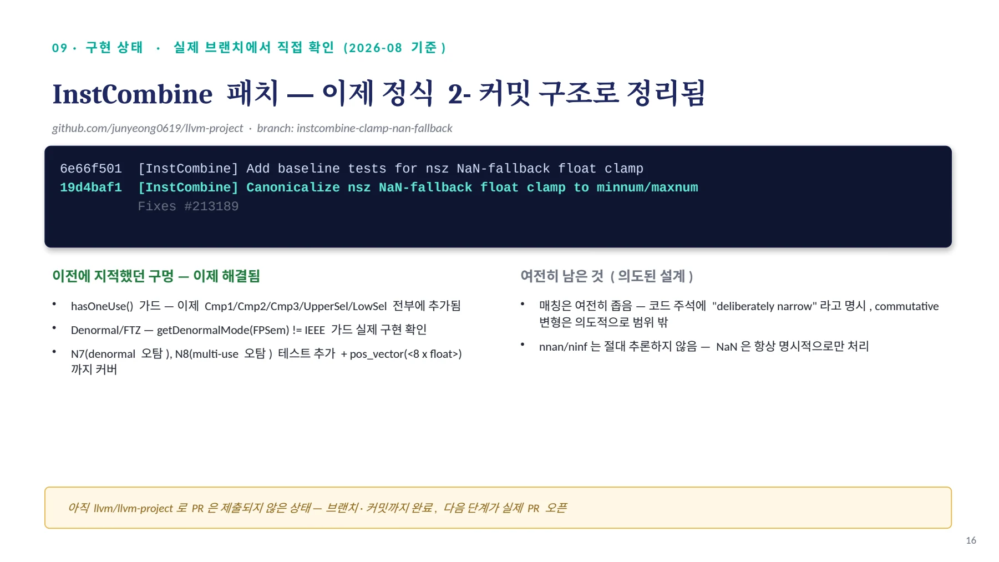
10 · 구 현 확 인 / Denormal/FTZ 가드 — 제안에서 실제 코드로 / // 실제 브랜치 코드 (InstCombineSelect.cpp, 커밋 19d4baf1)
10 · 구현 확인
Denormal/FTZ 가드 — 제안에서 실제 코드로
// 실제 브랜치 코드 (InstCombineSelect.cpp, 커밋 19d4baf1)
// The minnum/maxnum form treats denormals per IEEE. If the function
// may flush denormals to zero (FTZ/DAZ, e.g. from -ffast-math /
// crtfastmath.o), the rewrite is not value-equivalent.
Type *Ty = Outer.getType()->getScalarType();
const fltSemantics &FPSem = Ty->getFltSemantics();
if (Outer.getFunction()->getDenormalMode(FPSem) != DenormalMode::getIEEE())
return nullptr;•
우리가 제안했던 코드와 거의 동일 — 같은 파일 인접 fold의 실제 관용구를 그대로 재사용한 설계가 그대로 채택됨
•
코드 주석에 직접 우리가 짚었던 그 이유(-ffast-math/crtfastmath.o)가 명시되어 있음
•
N7(denormal 비-ieee) 테스트로 이 가드가 정확히 발동하는지 검증 완료
17
페이지 배치·기호·도식 확인하기

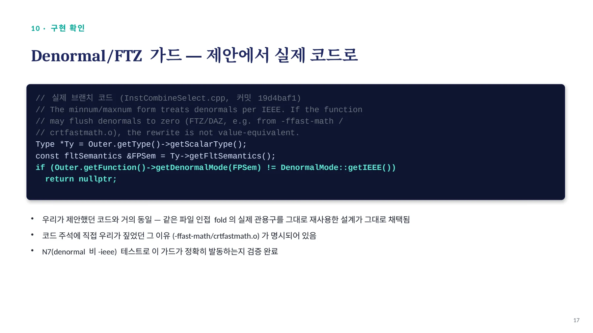
최종 결론 / 현재 상태 : llvm/llvm-project Issue #213189 로 실제 제출 ·assign 완료 / 적합 — 기존 규칙의 전제조건 완화이자 , 원조 이슈가 방치한 NaN 스펙
최종 결론
현재 상태 : llvm/llvm-project Issue #213189 로 실제 제출 ·assign 완료
1 ① 적합한 canonicalization?
적합 — 기존 규칙의 전제조건 완화이자, 원조 이슈가 방치한 NaN 스펙 공백을 채우는 기여
2 ② 추가 가드 필요?
3 ③ 타깃별 트레이드오프?
fcmp nsz·poison은 해소(형식 증명 완료). 유일한 잔여 위험은 denormal/FTZ — 이슈 본문에 가드 조건으로 명시
이슈에 실측 비용표 첨부 , target-guard 여부는 Open question 으로 남김
다음 단계
•
✓ 2- 커밋 구조 (baseline → functional) 로 브랜치 정리 완료 · ✓ denormal 가드 + hasOneUse 구현 완료 · ✓ N7/N8 테스트 추가 완료
•
남은 것 : Alive2 링크 포함한 PR 본문 작성 → Fixes #213189 로 llvm/llvm-project 에 실제 PR 오픈
18
페이지 배치·기호·도식 확인하기

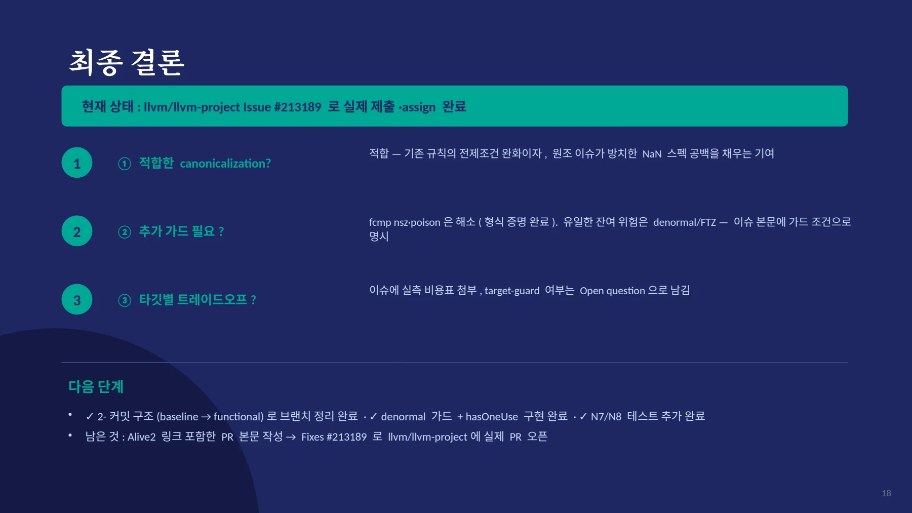
핵심 원리와 편집 주석
문제와 목표
일반 숫자는 하한과 상한 사이로 제한한다. NaN 입력에는 별도의 fallback 값을 반환한다. 기존 표현은 여러 fcmp와 select가 얽힌 트리다.
목표는 NaN 선택과 범위 제한을 분리하는 것이다. 범위 제한은 llvm.minnum과 llvm.maxnum으로 표현한다.
; 구조를 설명하기 위한 요약이다. 실제 적용에는 아래 조건이 필요하다.
%isnan = fcmp uno float %x, %x
%upper = call nsz float @llvm.minnum.f32(float %x, float 1.0)
%clamped = call nsz float @llvm.maxnum.f32(float %upper, float 0.0)
%result = select i1 %isnan, float %fallback, float %clamped변환 조건
- 값을 만드는 select에서 필요한 signed-zero 허용 조건을 확인한다.
- 하한과 상한의 순서를 확인한다.
- scalar 또는 부동소수점 vector 타입으로 범위를 제한한다.
- denormal 처리 모드가 변환의 의미를 바꾸는지 확인한다.
- NaN 입력에서는 fallback이 그대로 선택되어야 한다.
fcmp는 +0과 -0을 같은 값으로 비교한다. 비교 명령의 nsz 여부와 값을 만드는 명령의 nsz 요구를 구분해야 한다.
분석과 검증 과정
| 단계 | 확인한 질문 |
|---|---|
| 입력 분류 | NaN, 하한 미만, 범위 안, 상한 초과에서 결과가 같은가? |
| 선례 조사 | 기존 min/max fold는 어떤 fast-math 조건을 요구하는가? |
| 형식 검증 | Alive2가 가정한 FP·poison·undef 의미에서 변환이 성립하는가? |
| 환경 확인 | FTZ 또는 denormal 설정이 정규화의 의미를 바꾸는가? |
| 백엔드 확인 | min/max가 타깃의 명령어로 내려가는가, 함수 호출이 되는가? |
자료에는 성공한 증명뿐 아니라 실패한 시도와 그 원인도 남아 있다. 형식 검증의 결론은 도구가 모델링한 조건 안에서 읽어야 한다.
자료별 구현 단계
DOCX는 패턴 정의, 선례, 실험, 검증과 로컬 구현 검토를 상세히 다룬다. 수정 DOCX에는 설명 그림과 용어 정리가 추가되었다.
16장 발표자료는 이슈 제안과 별도 실습 브랜치를 구분한다. 18장 발표자료는 darktable 사례와 이후 브랜치의 구현 상태를 추가한다.
Markdown 패치 보고서는 로컬 구현과 회귀 테스트 결과를 설명한다. 각 자료의 숫자와 구현 상태는 해당 버전의 기록이다.
결과와 남은 문제
단순한 수식 치환을 FP 의미론, 실제 사용 사례, 검증 조건으로 확장한 기록이다. 이후 발견한 타입 크래시와 타깃별 비용 문제는 별도 문서에서 설명한다.
NaN을 별도로 처리해도 minnum·maxnum에 근거 없는 nnan을 붙일 수는 없다. 이 차이가 일부 타깃의 libcall 비용으로 이어질 수 있다.
문서 전문과 버전
- MD로컬 패치 보고서CLAMP_PATCH_REPORT.md
- PDF제안·검증 발표자료 · 16쪽llvm_issue_213189_ppt.pdf
- DOCX상세 분석 보고서llvm_issue_27_analysis.docx
- DOCX그림을 추가한 수정 보고서llvm_issue_27_analysis_edited.docx
- PDF실전 사례·후속 구현 발표자료 · 18쪽llvm_issue_27_presentation.pdf
각 자료는 별도의 버전입니다. 같은 주제라도 구현 상태·설명 범위·수치가 다를 수 있습니다.
관련 이슈와 PR
구현·병합 상태와 측정값은 해당 제출 자료의 작성 시점 기준입니다.